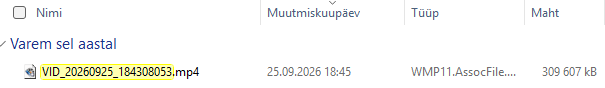
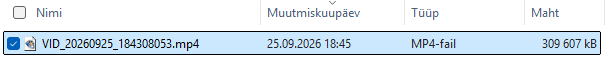

Video kopeeriti NAS-i, kuid kohalik fail oli nähtav ainult otsingus
Motorola Edge’i video teisaldati algul otse SSHFS-i Z:-kettale. Telefoni originaal oli siiski alles.
- Telefonis olnud originaalist tehti koopia C:-kettale.
- Fail kopeeriti edasi NAS-i.
- Võrreldi failivaates mahtu: mõlemas 309 607 kB; sihtfaili kestus oli 2.27. Kasutaja kinnitas, et video mängib.
Kopeerimise täpsed nupusammud ja failiräside võrdlus pole kinnitatud. See on kontrollitud taasesitusega töövõte, mitte baithaaval identsuse tõend.
Allalaadimiste tavavaates ei leidnud kasutaja kohalikku koopiat ka aja järgi sortides; otsing leidis. Del ei tekitanud kohe nähtavat muutust; järgmine klõps viis nime muutmise režiimi ja seejärel kadus fail otsingutulemustest. Kustutamine toimus otsinguvaates. Põhjus, miks fail tavavaates puudus, jäi teadmata.

